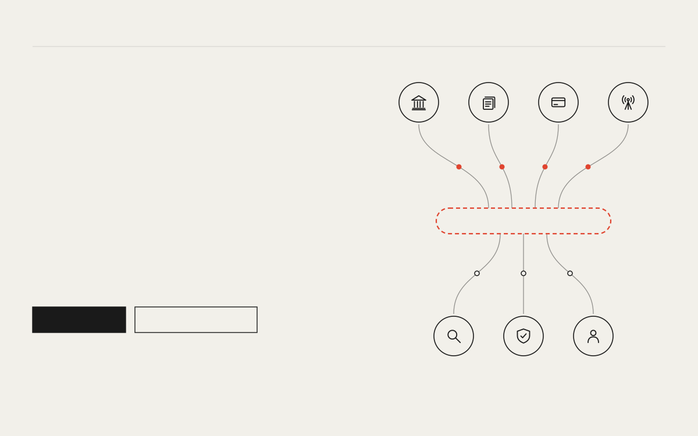

Open Value Thesis How it works Open questions Fellowship OPEN RESEARCH Independent systems can share one neutral record of what happened and in what order, without adopting each other's rules. The record sits underneath; everything that carries meaning stays above it, in the systems themselves. Read the thesis See the open questions SHARED RECORD · PROPOSED systems keep their own rules readers verify on their own terms P1 · HERO · claim sentence · engineering-print · explanation first